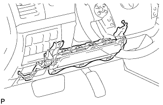
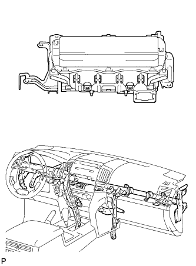

KNEE AIRBAG ASSEMBLY (for Driver Side) > ON-VEHICLE INSPECTION |
| 1. CHECK DRIVER SIDE KNEE AIRBAG ASSEMBLY (VEHICLE NOT INVOLVED IN COLLISION) |
 |
Perform a diagnostic system check (Click here).
With the driver side knee airbag installed on the vehicle, perform a visual check. If there are any defects as mentioned below, replace the driver side knee airbag with a new one:
Cuts, minute cracks or marked discoloration on the driver side knee airbag.
| 2. CHECK DRIVER SIDE KNEE AIRBAG ASSEMBLY (VEHICLE INVOLVED IN COLLISION AND AIRBAG HAS NOT DEPLOYED) |
 |
Perform a diagnostic system check (Click here).
With the driver side knee airbag removed from the vehicle, perform a visual check. If there are any defects as mentioned below, replace the driver side knee airbag with a new one: